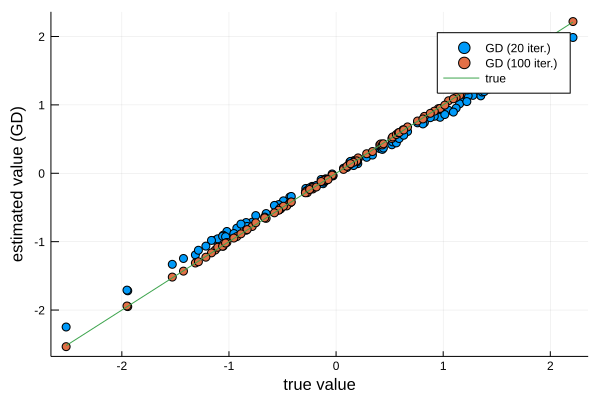
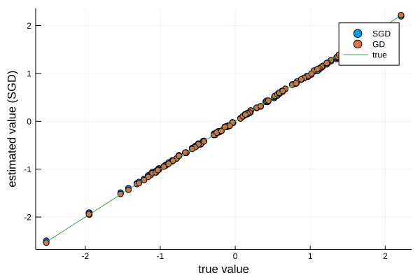
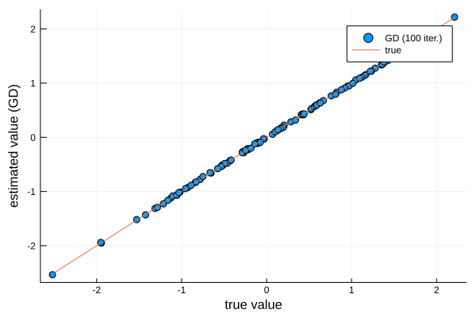

Coming from an Economics/Econometrics background, I have always been a bit puzzled by the way several Machine Learning (ML) textbooks I have read solve the ordinary least squares model (OLS). When considering a linear model of the form:
$$ y = X \beta + e $$
with $e$ a zero-mean noise term, the closed-form solution associated with minimizing the mean square error is:
$$ \beta = (X’X)^{-1}X’y $$
Several ML textbooks explain that a recursive algorithm (see below) may be used to solve for $\beta$. Why not directly using the analytical formula to calculate an estimate of $\beta$ ? While feasible with “small” datasets (not too many explanatory variables and/or observations), direct inversion of $X’X$ is not recommended when working with thousands of explanatory variables and/or billions of observations. The alternative is to use gradient descent, or better, stochastic gradient descent.
In this short post, I solve OLS the “machine-learning way”. That is, using (stochastic) gradient descent. The idea for gradient descent (GD) is quite intuitive. The gradient of $f$ at a given point tells us the direction of greatest increase for $f$ at this point. Hence, moving in the opposite direction (minus the gradient) is probably a good idea to find a local minimum. And indeed it is. The GD algorithm repetitively applies this procedure until a minimum (hopefully global) is found. Starting from an initial guess for $\beta$, one updates the guess using the following formula:
$$ \beta_{n} = \beta_{n-1} - \alpha * grad_{n}(\beta_{n-1},X,y) $$
where $\alpha$ is a small value (the “learning rate”) and $grad_{n}(\beta_{n-1},X,y)$ the gradient of the mean square error (another loss function can be used) evaluated at $\beta_{n-1}$ using the observations $X$ and $y$. Using the mean square error as a loss function generates a closed-form solution for the gradient:
$$ grad_{n}(\beta_{n-1},X,y) = (X’X)\beta - X’y $$
A refinement of GD, especially handy when dealing with a large dataset, is to use only a subset of the full sample when calculating the gradient:
$$ \beta_{n} = \beta_{n-1} - \alpha * grad_{n}(\beta_{n-1},X_n,y_n) $$
where $X_n$ and $y_n$ are a randomly selected sub-sample of $X$ and $y$. Stochastic Gradient Descent (SGD) reduces the computational burden associated with computing the gradient, while still having good convergence properties, as illustrated in the application below.
Implementation in Julia
Let’s first load packages and define parameters
using LinearAlgebra
using Distributions
using Plots
using Distributions
using Random
n_points=10000
dim_input=100 #dim of input, without the intercept
dim_output=1
# Normal noise
d = Normal()
# True parameters
beta = rand(d, dim_input + 1);
# Noise
e = rand(d, n_points);
# Input data:
X = rand(d, (n_points,dim_input));
# Add the intercept:
X = hcat(ones(n_points),X);
#Linear Model
y = X*beta .+ e;
This function calculates an estimate of $\beta$ using the analytical formula for OLS
#OLS way
function OLS_direct(X::Array, y::Vector)
inv(transpose(X)*X)*transpose(X)*y
end
OLS_direct (generic function with 1 method)
@time beta_hat = OLS_direct(X, y);
0.611144 seconds (1.85 M allocations: 96.576 MiB, 13.64% gc time)
Without any major surprise, using the analytical solution works perfectly well, as illustrated in the following plot
plot(beta, beta_hat, seriestype=:scatter, label="OLS (Direct)")
plot!(beta, beta, seriestype=:line, label="true")
xlabel!("true value")
ylabel!("estimated value (Direct)")
Gradient Descent
Now it’s time to solve OLS the machine learning way. I first define a function that calculates the gradient of the loss function, evaluated at the current guess using the full sample. Then, a second function applies the GD updating rule.
#Calculate the gradient
function grad_OLS!(G, beta_hat, X, y)
G[:] = transpose(X)*X*beta_hat - transpose(X)*y
end
grad_OLS! (generic function with 1 method)
#Gradient descent way
function OLS_gd(X::Array, y::Vector; epochs::Int64=1000, r::Float64=1e-5, verbose::Bool=false)
#initial guess
beta_hat = zeros(size(X,2))
grad_n = zeros(size(X,2))
for epoch=1:epochs
grad_OLS!(grad_n, beta_hat, X, y)
beta_hat -= r*grad_n
if verbose==true
if mod(epoch, round(Int, epochs/10))==1
println("MSE: $(mse(beta_hat, X, y))")
end
end
end
return beta_hat
end
OLS_gd (generic function with 1 method)
As illustrated below, after 20 iterations we are quite close to the true value. After 100 iterations, values obtained by GD are indistinguishable from the true values.
@time beta_hat_gd_20 = OLS_gd(X,y, epochs=20);
@time beta_hat_gd = OLS_gd(X,y, epochs=100);
plot(beta, beta_hat_gd_20, seriestype=:scatter, label="GD (20 iter.)")
plot!(beta, beta_hat_gd, seriestype=:scatter, label="GD (100 iter.)")
plot!(beta, beta, seriestype=:line, label="true")
xlabel!("true value")
ylabel!("estimated value (GD)")
0.137474 seconds (81.55 k allocations: 5.814 MiB) 0.466605 seconds (714 allocations: 8.225 MiB)

Stochastic Gradient Descent
One issue associated with plain vanilla GD is that computing the gradient might be slow. Let’s now randomly select only a fraction of the full sample every time we iterate. Here, I take only 10 percent of the full sample.
#Gradient descent way
function OLS_sgd(X::Array, y::Vector; epochs::Int64=1000, r::Float64=1e-5, verbose::Bool=false, batchsizePer::Int64=10)
#initial guess
beta_hat = zeros(size(X,2))
grad_n = zeros(size(X,2))
#how many draws from the dataset?
batchsize = round(Int, size(X,1)*(batchsizePer/100))
Xn = zeros(batchsize, size(X,2))
yn = zeros(batchsize)
for epoch=1:epochs
indices = shuffle(Vector(1:size(X,1)))
Xn = X[indices[1:batchsize],:]
yn = y[indices[1:batchsize]]
grad_OLS!(grad_n, beta_hat, Xn, yn)
#gradient descent:
beta_hat -= r*grad_n
if verbose==true
if mod(epoch, round(Int, epochs/10))==1
println("MSE: $(mse(beta_hat, X, y))")
end
end
end
return beta_hat
end
OLS_sgd (generic function with 1 method)
The following block of code shows that SGD achieves the same degree of accuracy, while being much faster than GD.
@time beta_hat_gd = OLS_gd(X,y, epochs=200);
@time beta_hat_sgd = OLS_sgd(X,y, epochs=200, batchsizePer=20);
plot(beta, beta_hat_sgd, seriestype=:scatter, label="SGD")
plot!(beta, beta_hat_gd, seriestype=:scatter, label="GD")
plot!(beta, beta, seriestype=:line, label="true")
xlabel!("true value")
ylabel!("estimated value (SGD)")
0.894465 seconds (1.41 k allocations: 16.448 MiB, 0.42% gc time) 0.513217 seconds (338.19 k allocations: 382.550 MiB, 4.60% gc time)

Conclusion
The OLS analytical formula is the gold standard to derive theoretical properties and is perfectly fine when working with reasonably-sized data. In a big data context, (stochastic) gradient descent is the way to go. SGD can be applied to a wide-range of minimization problems. In a machine-learning context, SGD is used to estimate (“train”) much more complicated models than the simple linear model presented here. In the Appendix below, I show how one can use SGD when no analytical solution for the gradient is available.
Appendix
GD without analytical solution for the gradient
Let’s assume we don’t have a closed-form solution for the gradient. In this context, Julia’s automatic differentiation library ForwardDiff is a good choice to calculate the gradient. Below, I define the loss function (MSE), I obtain the gradient of the loss function using ForwardDiff and I apply the SGD algorithm.
using ForwardDiff
function mse(beta::Vector, X::Array, y::Vector)
result = zero(eltype(y))
for i in 1:length(y)
#sum squared errors
result += (y[i] - dot(X[i,:],beta))^2
end
return result
end
mse (generic function with 1 method)
function grad!(G, beta_hat, X, y)
G[:] = ForwardDiff.gradient(x -> mse(x, X, y), beta_hat)
end
grad! (generic function with 1 method)
#Gradient descent way
function OLS_gd(X::Array, y::Vector; epochs::Int64=1000, r::Float64=1e-5, verbose::Bool=false)
#initial guess
beta_hat = zeros(size(X,2))
grad_n = zeros(size(X,2))
for epoch=1:epochs
grad!(grad_n, beta_hat, X, y)
beta_hat -= r*grad_n
if verbose==true
if mod(epoch, round(Int, epochs/10))==1
println("MSE: $(mse(beta_hat, X, y))")
end
end
end
return beta_hat
end
OLS_gd (generic function with 1 method)
@time beta_hat_gd = OLS_gd(X,y, epochs=100);
plot(beta, beta_hat_gd, seriestype=:scatter, label="GD (100 iter.)")
plot!(beta, beta, seriestype=:line, label="true")
xlabel!("true value")
ylabel!("estimated value (GD)")
3.180767 seconds (9.71 M allocations: 7.547 GiB, 12.66% gc time)
